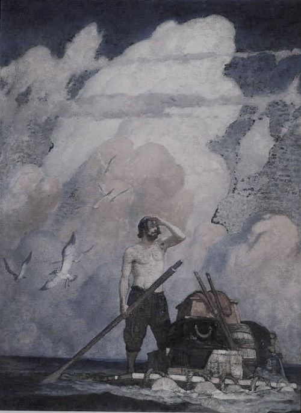

《活着》
《活着》是作家余华的代表作之一，讲述了在大时代背景下 ，随着内战、三反五反，大跃进，文化大革命等社会变革， 徐福贵的人生和家庭不断经受着苦难，到了最后所有亲人 都先后离他而去，仅剩下年老的他和一头老牛相依为命。
文学爱好者小报 WEN XUE AI HAO ZHE
2019年4月2日
《活着》是作家余华的代表作之一，讲述了在大时代背景下 ，随着内战、三反五反，大跃进，文化大革命等社会变革， 徐福贵的人生和家庭不断经受着苦难，到了最后所有亲人 都先后离他而去，仅剩下年老的他和一头老牛相依为命。
《围城》是钱钟书所著的长篇小说，是中国现代文学史上一部 风格独特的讽刺小说。被誉为“新儒林外史”。第一版于1947 年由上海晨光出版公司出版。故事主要写抗战初期知识分子的群相。
《鲁滨逊漂流记》
鲁滨逊漂流记》是英国作家丹尼尔·笛福的一部长篇小说。该书首次出版于1719年4月25日。 
该作主要讲述了主人公鲁滨逊·克鲁索（Robinson Crusoe）出生于一个中产阶级家庭，一生志在遨游四 海。一次在去非洲航海的途中遇到风暴，只身漂流到一个无人的荒岛上，开始了段与世隔绝的生活。他凭 着强韧的意志与不懈的努力，在荒岛上顽强地生存下来，经过28年2个月零19天后得以返回故乡。
这部小说是笛福受当时一个真实故事的启发而创作的。1704年9月，一名叫亚历山大·塞尔柯克的苏格兰水 手与船长发生争吵，被船长遗弃在大西洋中，在荒岛上生活4年4个月之后，被伍兹·罗杰斯船长所救。笛 福便以塞尔柯克的传奇故事为蓝本，把自己多年来的海上经历和体验倾注在人物身上，并充分运用自己丰 富的想象力进行文学加工，使“鲁宾逊”不仅成为当时中小资产阶级心目中的英雄人物，而且成为西方文学 中第一个理想化的新兴资产者。该小说发表多年后，被译成多种文字广为流传于世界各地，并被多次改编 为电影和电视剧。
书籍推荐：
《挪威的森林》 ·······村上春树
《穆斯林的葬礼》 ·······霍达
《基督山伯爵》······大仲马
《苏菲的世界》 ······乔斯坦·贾德
《破碎的四月》······卡达莱
《汤姆叔叔的小屋》······斯托夫人